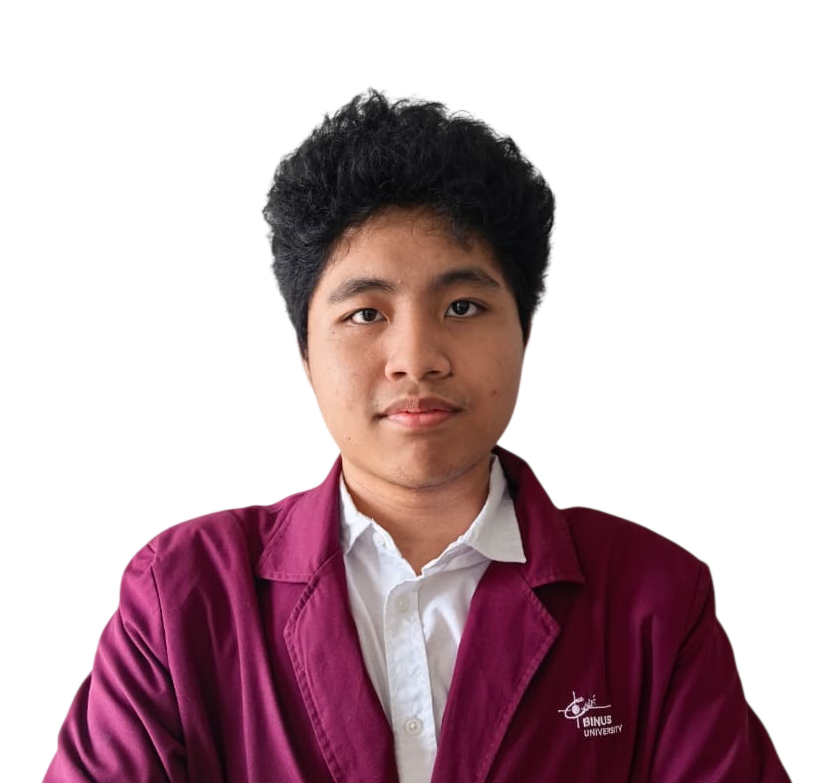
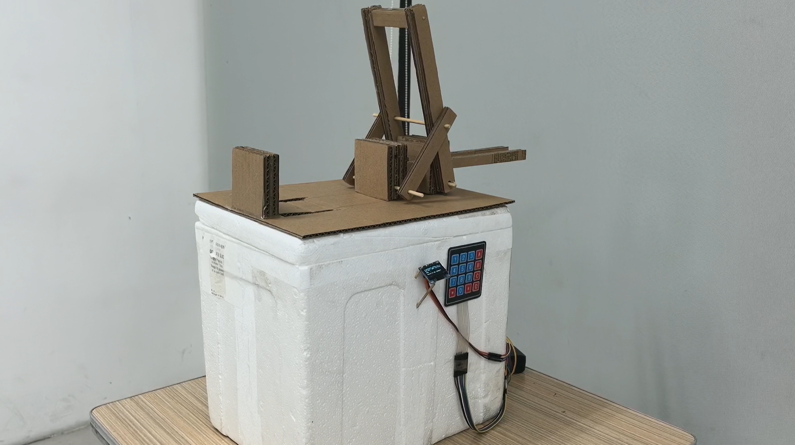
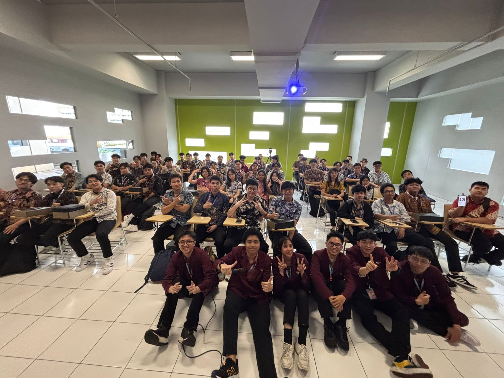
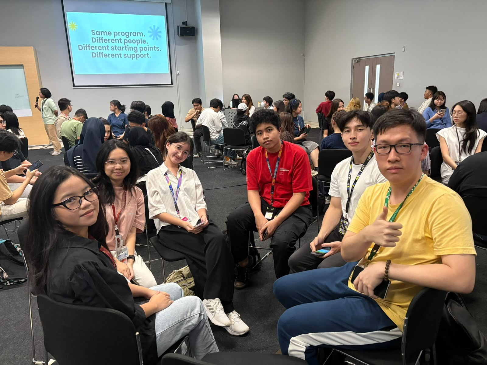

Freshman Chaperone
A volunteer program where I guided incoming BINUS freshmen, as Freshman Partner and Leader for Binusian 2029 and Freshman Leader for Binusian 2030.
View detailsAI, TECH, AND PROGRAMMING ENTHUSIAST
Hello im Rakha Adinata Zavier, a student of Computer Science (Intelligent Systems) at BINUS University. I have a passion for programming, AI, data analysis, and web development. I have experience in various projects and competitions, and I am always eager to learn and collaborate on new ideas.
My Projects
I am Rakha Adinata Zavier, a undergraduate student of Computer Science (Intelligent Systems) at BINUS University since September 2024.
The courses I have studied include Machine Learning, NLP, Software Engineering,and Computer Vision. I have applied this knowledge through competitions and research, starting from AI and IoT applications that that me and my friends have developed to connect communities with the recycling industry for Samsung Solve for Tomorrow Competition, also me and my team have published a paper evaluating recommendation models in IEEE (ICISS 2026).
Now i'm a mentor in BINUS University and teaching three mentee (right now) for , and also an HRD Activist (Internal Organizer) in Bina Nusantara Computer Club
Education
Undergraduate Bachelor of Computer Science, Intelligent Systems
Sep 2024 - present · Tangerang, Indonesian
Data Structure, Database Technology, Software Engineering, Artificial Intelligence, Human and Computer Interaction, Machine Learning, NLP, Computer Vision.
Skills
Technical
Soft skills
Languages
Swipe to explore. Select an image to enlarge it.

A WhatsApp-based recycling pickup system with a smart drop box. Residents send their location and a message, an LLM reads it, and Google OR-Tools plans efficient pickup routes for collectors. Built with an ESP32 IoT box, Node.js, Python, and PostgreSQL. Created for Samsung Solve for Tomorrow.
View details
SorTrash was my first web development project that uses pretrained AI model (YOLO) for analyzing different types of trash, sorTrash is a web-based application that could detect the type of trash based of an image that the user inputs or takes, and also can detect it in real time using our real-time detection features.
View details
VisioAttend is a desktop attendance system created for a computer vision course. It registers students, recognizes faces through a webcam, and records daily attendance. It is built with Python, Tkinter, and OpenCV, using Haar Cascade for face detection and LBPH for face recognition.
View details
CheckShop was my first project to make a web with many NLP models and analyzing the NLP models to know which one model is the best for CheckShop, CheckShop is an Streamlit website application that analyzes the sentiment of English online shop reviews using four models side by side: Logistic Regression, Naive Bayes, XGBoost, and a fine-tuned BERT. After we analyze the models, the best result came from BERT with a macro F1-score of 94.4%.
View detailsSwipe to explore organization and work experience.
A volunteer program where I guided incoming BINUS freshmen, as Freshman Partner and Leader for Binusian 2029 and Freshman Leader for Binusian 2030.
View details
HRD (Internal) activist at Bina Nusantara Computer Club, helping organize internal events such as activist bonding and internal training, either than that i join and organizing some of the external events.
View details
Event committee and hosting work across IIT Challenge, BNCC TechDive, and BNCC TechUp.
View details
As a selected Computer Science student in the Sclass UREEKA track, I honed my web/app development and soft skills, leveraging this training to actively participate in multiple hackathons.
View details
I was selected as a Scholarship Mentor at BINUS University, a role that provides me with a scholarship to help cover my tuition fees. Currently, I guide three mentees across various academic disciplines, offering personalized support to help them master specialized courses such as Speech Recognition, Compilation Techniques, and Algorithm and Programming.
View details
Open to work! If you're interested, please contact me